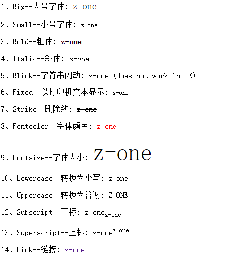

文字角标
文字角标
常用上标 ⁰ ¹ ² ³ ⁴ ⁵ ⁶ ⁷ ⁸ ⁹ ⁺ ⁻ ⁼ ⁽ ⁾ ⁿ º ˙
常用下标₀ ₁ ₂ ₃ ₄ ₅ ₆ ₇ ₈ ₉ ₊ ₋ ₌ ₍ ₎ ₐ ₑ ₒ ₓ ₔ ₕ ₖ ₗ ₘ ₙ ₚ ₛ ₜ
更多上标 ᵃ ᵇ ᶜ ᵈ ᵉ ᵍ ʰ ⁱ ʲ ᵏ ˡ ᵐ ⁿ ᵒ ᵖ ᵒ⃒ ʳ ˢ ᵗ ᵘ ᵛ ʷ ˣ ʸ ᙆ ᴬ ᴮ ᒼ ᴰ ᴱ ᴳ ᴴ ᴵ ᴶ ᴷ ᴸ ᴹ ᴺ ᴼ ᴾ ᴼ̴ ᴿ ˢ ᵀ ᵁ ᵂ ˣ ᵞ ᙆ ꝰ ˀ ˁ ˤ ꟸ ꭜ ʱ ꭝ ꭞ ʴ ʵ ʶ ꭟ ˠ ꟹ ᴭ ᴯ ᴲ ᴻ ᴽ ᵄ ᵅ ᵆ ᵊ ᵋ ᵌ ᵑ ᵓ ᵚ ᵝ ᵞ ᵟ ᵠ ᵡ ᵎ ᵔ ᵕ ᵙ ᵜ ᶛ ᶜ ᶝ ᶞ ᶟ ᶡ ᶣ ᶤ ᶥ ᶦ ᶧ ᶨ ᶩ ᶪ ᶫ ᶬ ᶭ ᶮ ᶯ ᶰ ᶱ ᶲ ᶳ ᶴ ᶵ ᶶ ᶷ ᶸ ᶹ ᶺ ᶼ ᶽ ᶾ ᶿ ꚜ ꚝ ჼ ᒃ ᕻ ᑦ ᒄ ᕪ ᑋ ᑊ ᔿ ᐢ ᣕ ᐤ ᣖ ᣴ ᣗ ᔆ ᙚ ᐡ ᘁ ᐜ ᕽ ᙆ ᙇ ᒼ ᣳ ᒢ ᒻ ᔿ ᐤ ᣖ ᣵ ᙚ ᐪ ᓑ ᘁ ᐜ ᕽ ᙆ ᙇ ⁰ ¹ ² ³ ⁴ ⁵ ⁶ ⁷ ⁸ ⁹ ⁺ ⁻ ⁼ ˂ ˃ ⁽ ⁾ ˙ * º
更多下标 ₐ ₔ ₑ ₕ ᵢ ⱼ ₖ ₗ ₘ ₙ ₒ ₚ ᵣ ₛ ₜ ᵤ ᵥ ₓ ᙮ ᵤ ᵩ ᵦ ₗ ˪ ៳ ៷ ₒ ᵨ ₛ ៴ ᵤ ᵪ ᵧ
中文上标 ㆒㆓㆔㆕㆖㆗㆘㆙㆚㆛㆜㆝㆞㆟
html角标
<sup>上标
<sub>下标
<small>小号字
<del> 删除线
 结果
结果
对应的 js
stringObj.sup() 上标
stringObj.sub() 下标
stringObj.sub() 使用小字号显示
stringObj.strike() 使用删除线
彩蛋：
<!doctype html>
<html lang="en">
<head>
<meta charset="UTF-8" />
<title>Document</title>
</head>
<body>
<script type="text/javascript">
var txt = "z-one"
document.write("<p>1、Big--大号字体: " + txt.big() + "</p>")
document.write("<p>2、Small--小号字体: " + txt.small() + "</p>")
document.write("<p>3、Bold--粗体: " + txt.bold() + "</p>")
document.write("<p>4、Italic--斜体: " + txt.italics() + "</p>")
document.write("<p>5、Blink--字符串闪动: " + txt.blink() + " (does not work in IE)</p>")
document.write("<p>6、Fixed--以打印机文本显示: " + txt.fixed() + "</p>")
document.write("<p>7、Strike--删除线: " + txt.strike() + "</p>")
document.write("<p>8、Fontcolor--字体颜色: " + txt.fontcolor("Red") + "</p>")
document.write("<p>9、Fontsize--字体大小: " + txt.fontsize(16) + "</p>")
document.write("<p>10、Lowercase--转换为小写: " + txt.toLowerCase() + "</p>")
document.write("<p>11、Uppercase--转换为大写: " + txt.toUpperCase() + "</p>")
document.write("<p>12、Subscript--下标: " + txt+txt.sub() + "</p>")
document.write("<p>13、Superscript--上标: " +txt+ txt.sup() + "</p>")
document.write("<p>14、Link--链接: " + txt.link("http://www.cnblogs.com/z-one") + "</p>")
</script>
</body>
</html>
